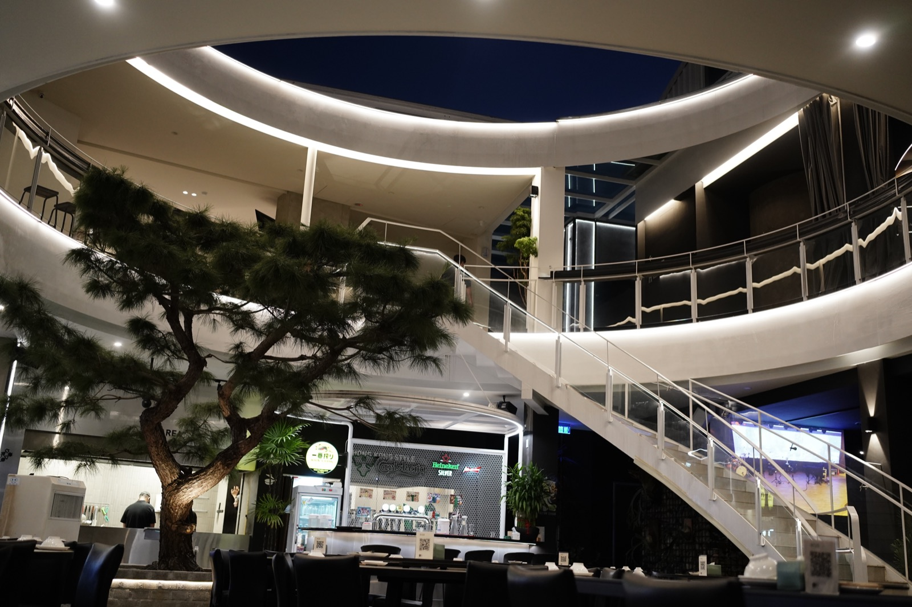
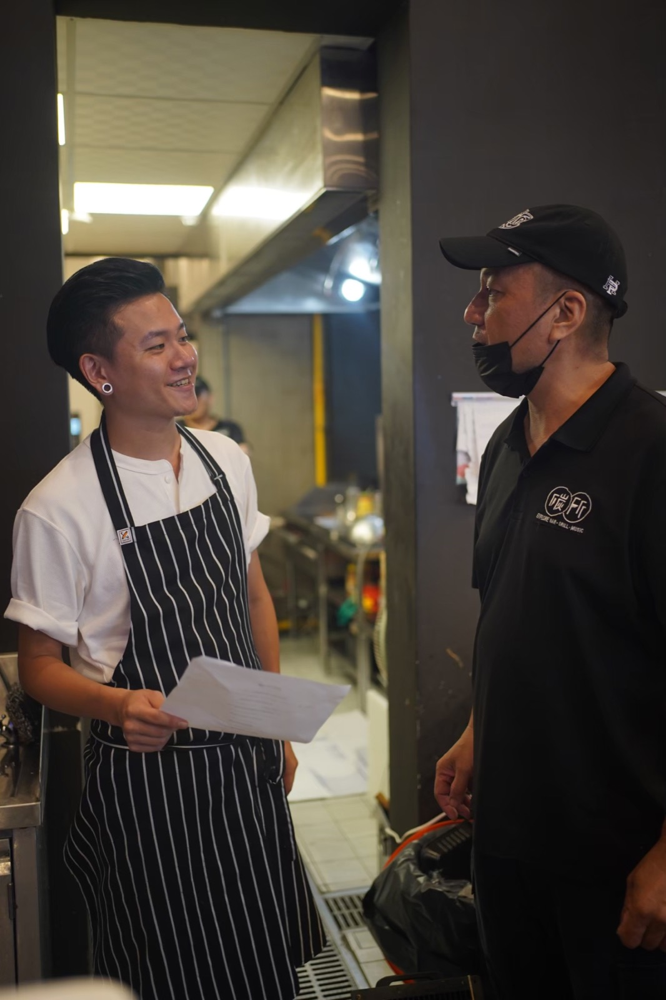
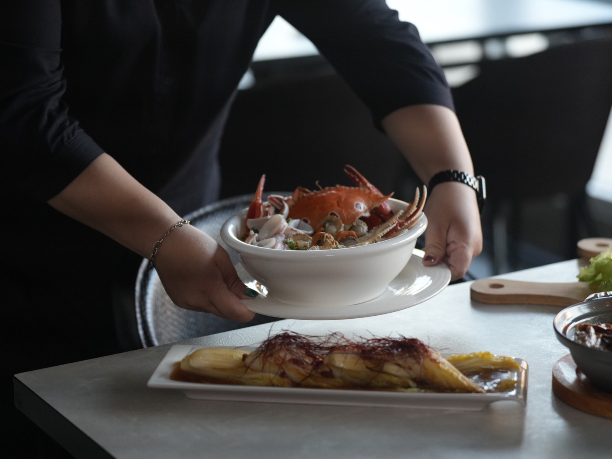
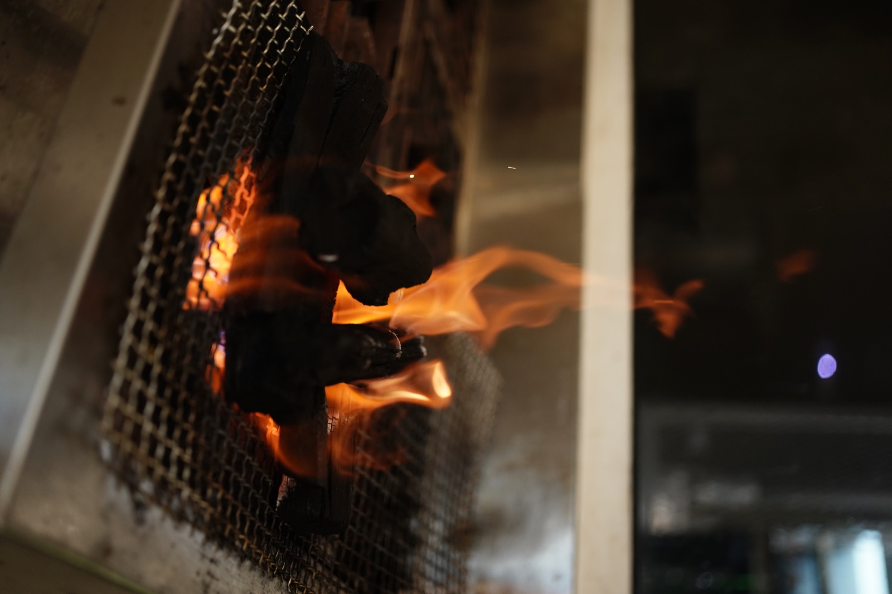
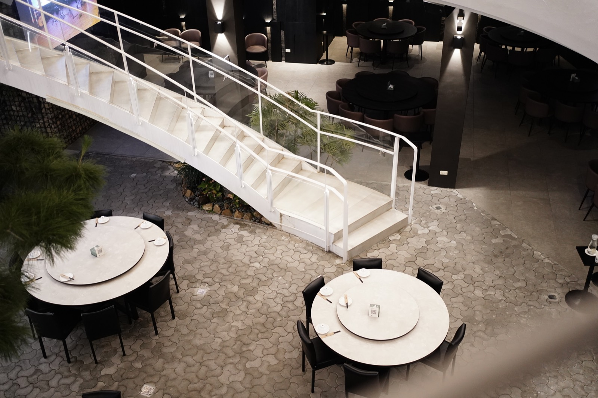

碳所音樂餐廳擁有可開闔屋頂的用餐空間、現場樂團與活鮮水產，也有主理人長期累積的水產背景。傑弗德把這些條件轉成顧客能從菜單、上菜到社群內容實際感受到的特色，並與既有廚師團隊一起完成研發、試菜和現場調整。

空間已具特色，線上視覺、菜色呈現與現場流程卻尚未完整串接；品牌希望有質感，也需要維持親近的消費門檻。
以主理人的水產優勢及原有廚師專長為基礎，共同研發一般用餐與 VIP 私廚菜單，同步整理出餐、攝影與社群呈現。
菜色打樣、擺盤、服務方式與線上內容開始依共同方向推進，讓品牌的空間特色有對應的料理與體驗內容。
01 ／ 案例背景
碳所的屋頂可以開闔，轉換室內外的用餐感受，並結合現場樂團與活鮮料理。餐廳具有大型聚餐空間與私人 VIP 包廂，因此需要同時處理一般用餐與預約私廚兩種需求：前者講求價格接受度、菜色選擇與穩定出餐，後者則需要完整的桌菜及宴客安排。
02
進場時，餐廳已有完整場域與具經驗的廚師，但菜色、工作流程與線上視覺尚未形成一致方向。新的概念要能落實，必須讓各部門師傅理解調整的原因，也讓研發能運用他們原有的技術與專長。
03
04
為什麼：新菜與新呈現需要原有團隊理解、認同並持續執行。
影響：顧問親自參與試作，以反覆溝通、打樣與試菜，把新的料理概念與各部門專長結合。
為什麼：一般聚餐與私人宴客有不同期待，水產優勢需要轉成顧客吃得到的特色。
影響：分別規劃一般用餐菜色及 VIP 包廂的無菜單桌菜、宴會與私廚菜單。
為什麼：用餐感受也來自廚房完成方式、外場接菜與送到桌上的呈現。
影響：試菜同步討論盤飾、出餐模式與上菜方式，讓內外場對菜色呈現有共同理解。
為什麼：空間、料理與水產特色需要透過一致的內容被看見。
影響：整合餐飲攝影、圖文與社群規劃，讓線上呈現有相應的現場內容承接。
05
06
反覆打樣試菜，調整擺盤與呈現。
規劃一般用餐與 VIP 私廚、宴會菜單。
串聯資深廚師、各部門與內外場出餐。
優化線上識別、餐飲攝影、圖文與社群呈現。
依現場需求提出設備與營運方向。
案例影像




07 ／ 成果
這次合作串聯主理人的水產資源、原有廚師的技術、場域特色與線上內容。透過反覆試作和現場溝通，菜色、出餐及品牌呈現有了共同調整的方向，也讓一般用餐與私人宴客能被分別規劃。
以上為質性觀察與階段性成果說明，實際執行內容依合約範圍為準，不代表對特定營業額、獲利或回本時間的保證。
從菜單、現場與品牌呈現一起盤點。